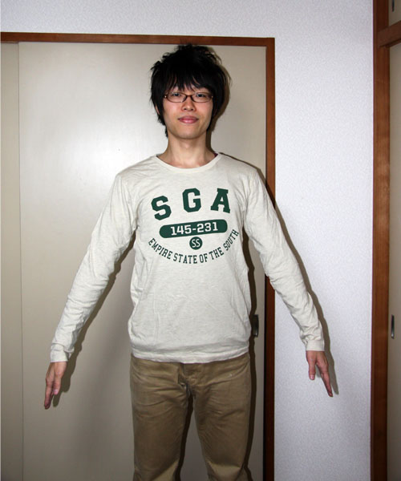
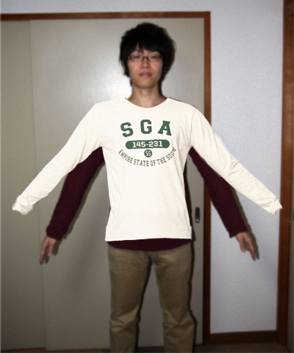

当実験は画像を合成することにより発生する違和感が何に起因するかを調査することを目的としています。
当実験により得られた調査結果は卒業研究・卒業論文、及び今後の仮想試着システムの参考に用いられます。
被験者には表示される画像の品質を評価して頂きます。表示画像に合成感（違和感）が
ない かすかにある ある 明らかにある 非常にある
の五段階評価となります。
・サンプル画像（この場合、左が「違和感がない」右が「非常にある」となります。）


ご協力いただける場合は下の基礎情報を入力し、『アンケートへ』を押してください。
アンケートは５分程度で終了します。